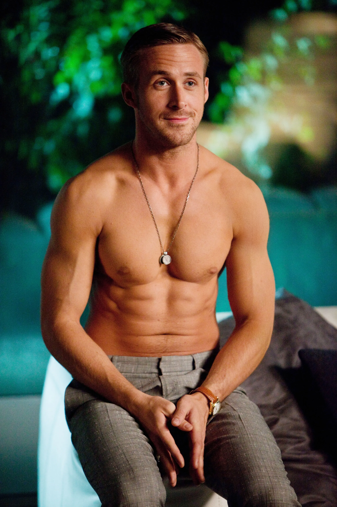
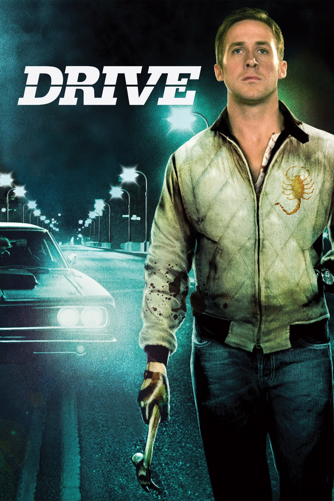
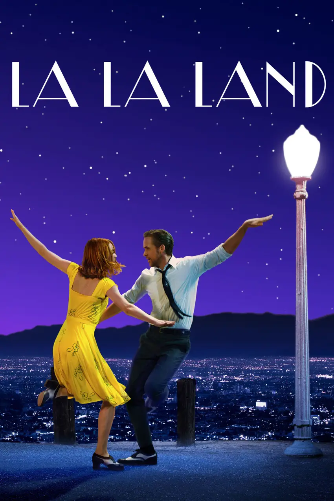
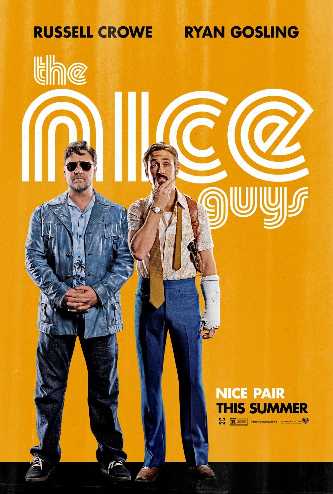

Ryan Thomas Gosling is a Canadian actor.
He is prominent in independent film and major studio features in many different genres.

(2011)

(2016)

(2016)
"There's something messed up with my brain." - Ryan Gosling